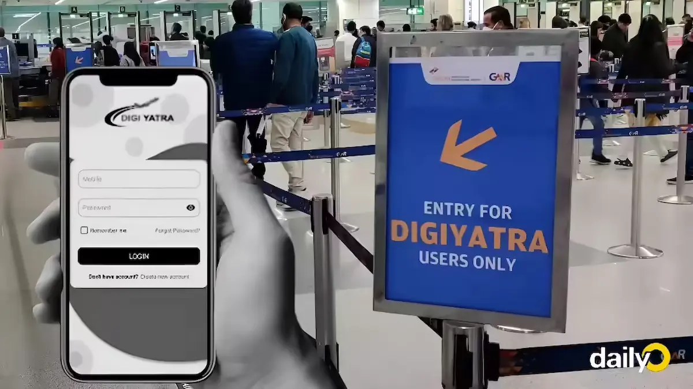
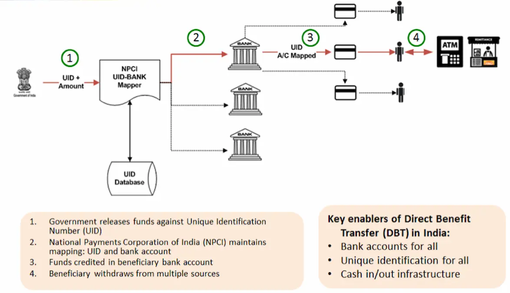
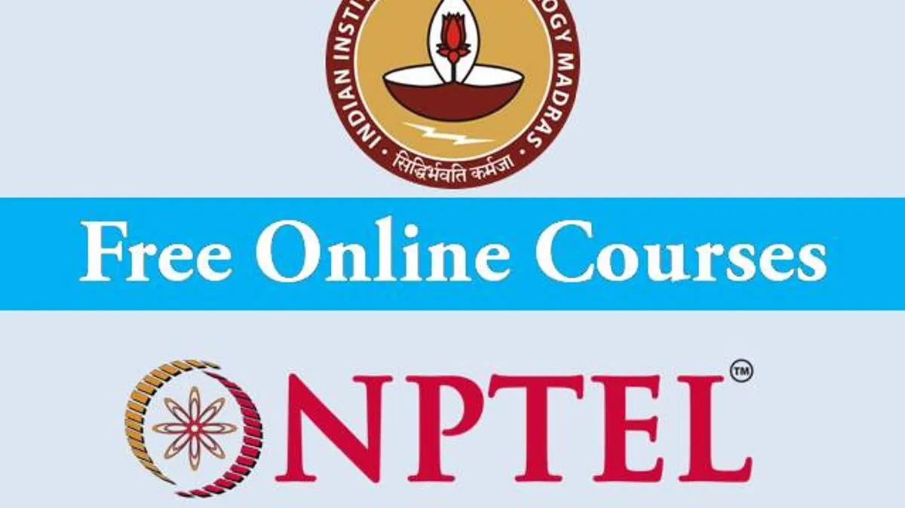
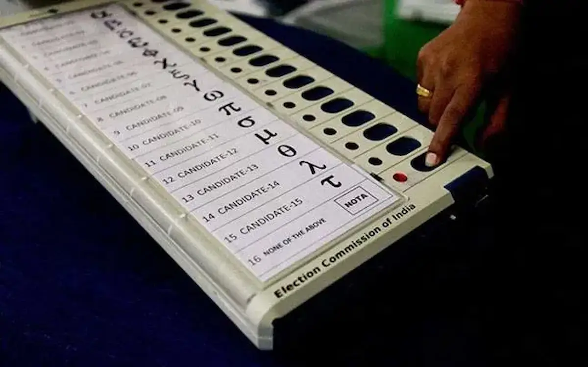
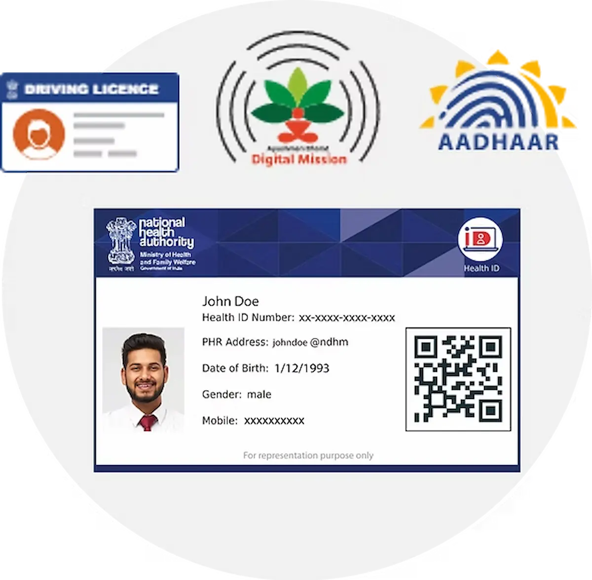

This is not just about going paperless. It is about rewiring who holds power in the digital economy. Below is a tour of the key building blocks.
1. UPI: Democratization of Digital Payments

Unified Payments Interface (UPI) turned India into one of the world’s largest real-time payments markets...
2. ONDC: Democratization of E-Commerce

The Open Network for Digital Commerce (ONDC) tries to do for e-commerce what UPI did for payments...
3. Aadhaar (UIDAI): Democratization of Identity

Aadhaar is a digital identity layer that allows individuals to prove who they are...
4. OCEN: Democratization of Credit

The Open Credit Enablement Network (OCEN) aims to unlock small-ticket loans for many informal workers...
5. DigiLocker: Democratization of Documents
DigiLocker acts as a secure digital wallet for official documents like Aadhaar and driving licenses...
6. Digi Yatra: Democratization of Airport Experience

Digi Yatra uses digital identity for seamless airport journeys — moving from entry gate to boarding without repeated checks...
7. iDEX: Democratization of Defence Innovation

...
8. GeM: Democratization of Government Procurement
...
9. ULIP: Democratization of Logistics

...
10. DBT: Democratization of Welfare Delivery

...
11. Democratization of Education

...
12. ONOS: Democratization of Research Access
...
13. ONOE: Democratization of Elections

...
14. ABHA: Democratization of Health Records

...
Conclusion: A Blueprint Others Will Study
Seen together, these initiatives form a strategy: build interoperable public rails and let many actors innovate on top.